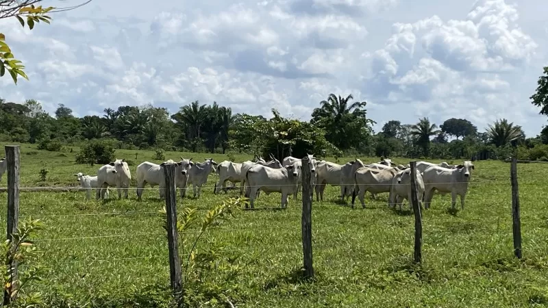
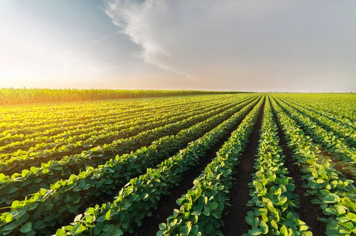
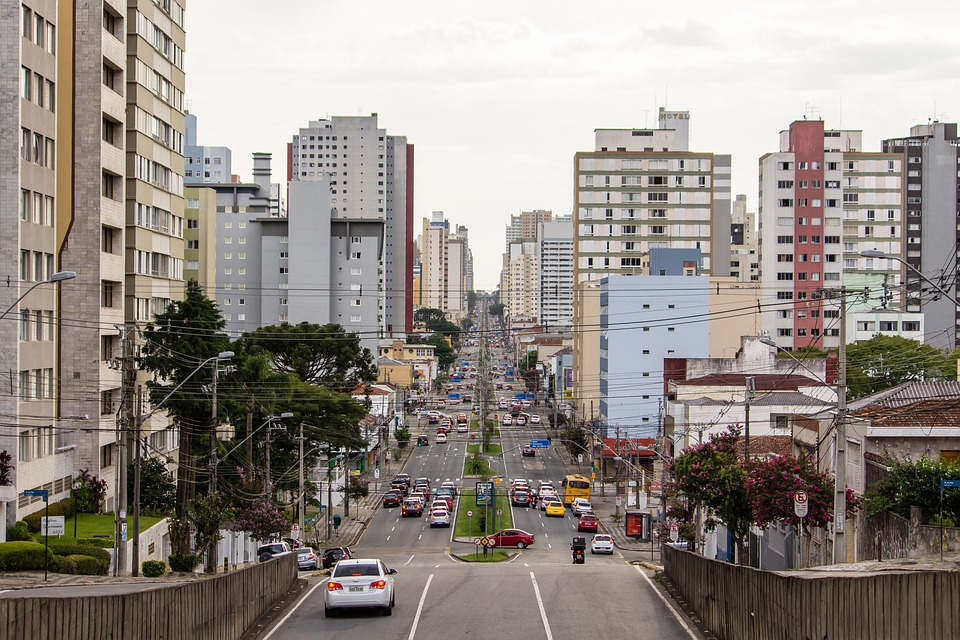

Apresentação
Bem-vindo ao nosso site "Do Campo para a Cidade". Este projeto explora a relação entre o ambiente rural e a vida urbana, destacando a importância da agricultura na nossa sociedade moderna. Aproveite a nossa galeria de imagens e teste seus conhecimentos com o nosso quiz interativo!
Galeria de Imagens



Quiz sobre Agricultura e Cidade
Teste seus conhecimentos sobre a interação entre o campo e a cidade com nosso quiz interativo!